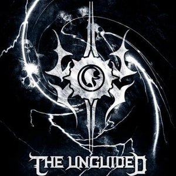
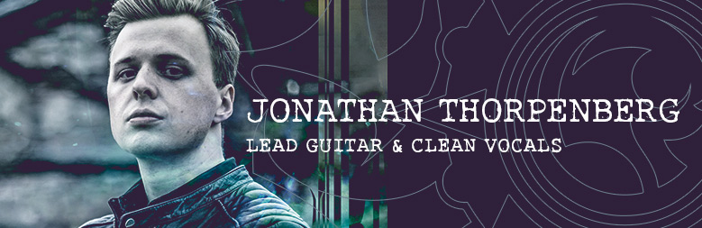
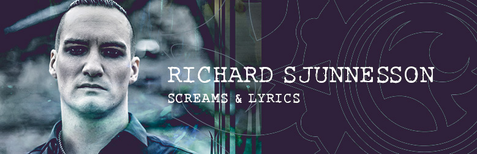
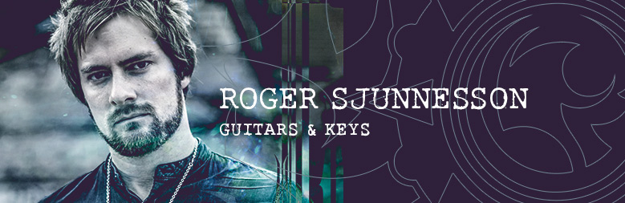
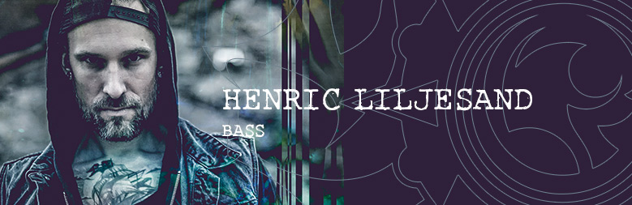
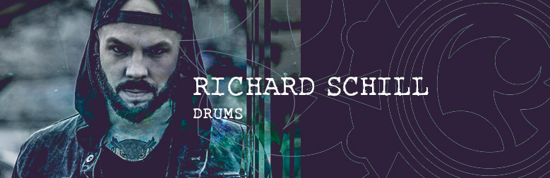

press release 2017
Sadly former guitarist and singer Roland Johannsson has decided to leave The Unguided, but with new frontman; Jonathan Thorpenberg, THE UNGUIDED have found the perfect replacement! After having released a very well received 2-track EP in December of last year, it’s time to get ready for the full-length studio album! Please welcome “And The Battle Royale”.
Richard Sjunnesson states:
“We’ve without doubt sacrificed our five souls into this one. Everyone knew it would be a career defining record after the departure of our highly-acclaimed brother and we had no intensions to disappoint our fans nor ourselves writing and recording this dynamic monster with innovative producer Dino medanhodzic. Everyone indeed brought their absolute A-game on this record and Jonathan over performed in every possible way whilst also bringing something completely new to the table. A table which much urgently needed it I’d say.
This is a new chapter! This is THE UNGUIDED 2017!
THE UNGUIDED incubate a heavyweight of Melodic Death Metal which will freak out all metalcore forerunners in their greatest era.
But it doesn’t end there! There is more good news, as THE UNGUIDED have decided to deliver a full Live DVD with the limited Digipak version on top of this new release! The DVD captures Roland Johansson’s farewell show in Falkenberg (Sweden) with a unique 6-man strong setting of the band. This will be a killer package for sure!
In terms of excellent songwriting, both vocalists, Richard Sjunnesson and new addition Jonathan Thorpenberg, are building up a perfect symbiosis of brutal shouts and huge melodies! Stomping Industrial is gilded in heavy-handed synthesizers as a battle trophy. “And The Battle Royale” is a must-have for all those who value pure harshness with a good portion of sex appeal!

How I joined the band:
I was asked to fill in for Roland at a gig in northern Sweden in the summer of 2015. I thought it would only be a one-time gig but I´m glad to say I was wrong. Because of Roland’s busy schedule outside the band, I was given the job of filling in for him on some more shows in Sweden and then on our spring tour in 2016. Later that year I was given the chance to be a permanent member of the band and let´s just say it was an offer I could not refuse. I am really looking forward to what the future has in store!
Other bands (past and present):
Faithful Darkness, Empress
Gear & endorsements:
Being a producer, I use a lot of different instruments for different styles of music. When playing with The Unguided I use: Caparison Angelus TR (w/ EMG 81/60), Axe-Fx Ultra , Behringer FCB 1010, TC Electronic Polytune, Line 6 Relay G30 Wireless, Dunlop Jazz III Ultex picks.
Guitarists and vocalist whom I’ve been inspired by:
Guitar: Yngwie Malmsteen, Jeff Loomis, Guthrie Govan, Mattias ”IA” Eklund among many others.
Vocals: Howard Jones, Spencer Sotelo, Bruno Mars (yes, him).
Favorite Quotes:
”If God exists, I hope he has a good excuse.” (Woody Allen)

How I joined the band:
After I left “Sonic Syndicate” in 2010 it was finally time for “The Unguided” to spread its crude wings of power! The concept of “The Unguided” was an old vision between me and Roger, originating back as far as 2008. But it was not until the end of 2010 it became definitive, when I and my brother together with Roland materialized the vague idea into solid reality.
Other bands (past and present):
Sonic Syndicate, Faithful Darkness
Gear & endorsements:
Sullen Clothing. A set of razor lounges, pair of spiked balls and coltan alloyed throat. Whatever mics are available at the show! I prefer Shure Beta 58a, Shure SM58 and AKG D5 however. For studio recordings I fancy Shure SM7.
Vocalists and lyricist whom I’ve been inspired by:
Hansi kürsch, Mikael Stanne.
Favorite Quotes:
- "I know not with what weapons World War III will be fought, but World War IV will be fought with sticks and stones." (Albert Einstein)

How I joined the band:
Me and Rich talked about forming “The Unguided” back in 2008. We started to write a couple of songs together and two years later in November 2010 we started the band together with Roland Johansson.
Other bands (past and present):
Sonic Syndicate
Gear & endorsements:
Ibanez Guitars (ART’s), EMG 81 85 Pickups, Dunlop Strings, Mesa Boogie Dual Rectifier amp, Dunlop pedals (Crybaby Wah wah, EVH90 Phaser, MXR Delay) BOSS pedals, AKG wireless, Korg Tuners.
Guitarists whom I’ve been inspired by:
Alexi Lahio, Jonas Kjellgren.
Favorite Quotes:
- "Save the cheerleader save the world" (Heroes)

How I joined the band:
Me and Roland have been trying to do something together for a long time, but when they founded “The Unguided” and asked me to join in as a session member early 2011 I didn't have to think for long before I said yes. And as the project became more and more a band, I was stoked to join as a official member in the autumn of 2011.
Other bands (past and present):
Gear & endorsements:
Musicians whom I've been inspired by:
When I started playing for real (at the age of 15) At the Gates, Dissection, Edge of Sanity and In Flames was my main inspiration to play melodic death metal. Not really the members in the band, more the music it self. I will probably still get inspiration from those songs when I am 70.
Favorite Quotes:
- "If you don't live for something, you'll die for nothing" (Hate breed)

How I joined the band:
Roger asked me to join in as a session member early 2012 and I said yes, of course. We recorded the BOTC video and after that we did 3 summer shows. We wanted to see if we did well together as friends before we could make a decision. We did well as fuck! ;)
Other bands (past and present):
Shining (Depressive Black & Roll), Spawn of Possession (Technical Death Metal), My Collapse (Groovy Death Metal), King Leaf Experience (Stoner Rock), Acacia/Livsnekad (Shoegaze/Black Metal), Level Above Human (Ultra Brutal Death Metal), Vile Scar (Death Metal)
Gear & endorsements:
Premier Artist Maple, Zildjian cymbals, Pearl Demondrive pedals, Wincent drumsticks.
Drummers and Bands whom I´ve been inspired by:
Bobby Jarzombek (since I was a small kid), Benny Greb and my favorite bands right now is Volumes and The Acacia Strain FFS!
Favorite Quotes:
- "Just because you´re breathing, doesn´t mean that you´re alive" (The Acacia Strain)
past Members
Roland Johansson (2010-2016)
John Bengtsson (2011-2012)